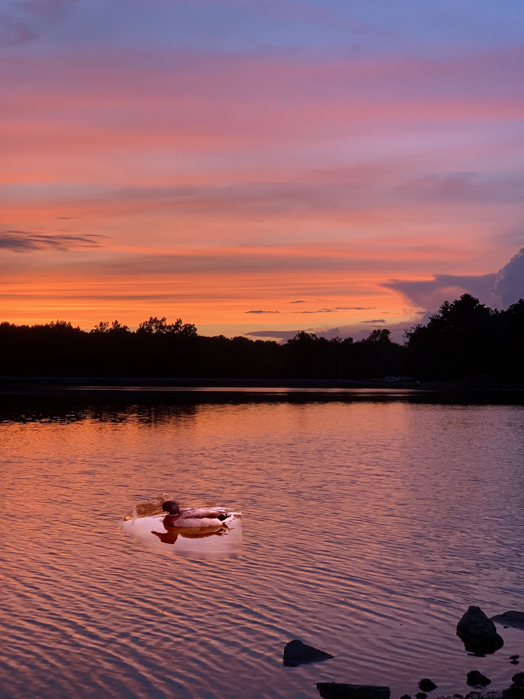

Explanation:
Poisson blending works by setting up a matrix of constraints for each pixel in the image and solving the least squares problem.
As you can see in the image below, not all images are well suited for Poisson Blending. In the example below the duck image that was added in had too much texture in the background which had a large impact on the resulting image. Images with smooth backgrounds work much better for pasting in.
This result of mixed gradient blending shows its strength. The text is added without disrupting the texture of the wall and smoothly blends from areas in shadow to areas in light.
Using just the Poisson Blend does not work in some situations. You can see here that adding text with a smooth background to a wooden door smoothes the door texture. To avoid this we use the highest gradient for any given pixel to keep the door texture.
One difficulty was finding situations that this technique would work well in. Images with a noisy background will transfer their noise to the result and make the transition unnatural.